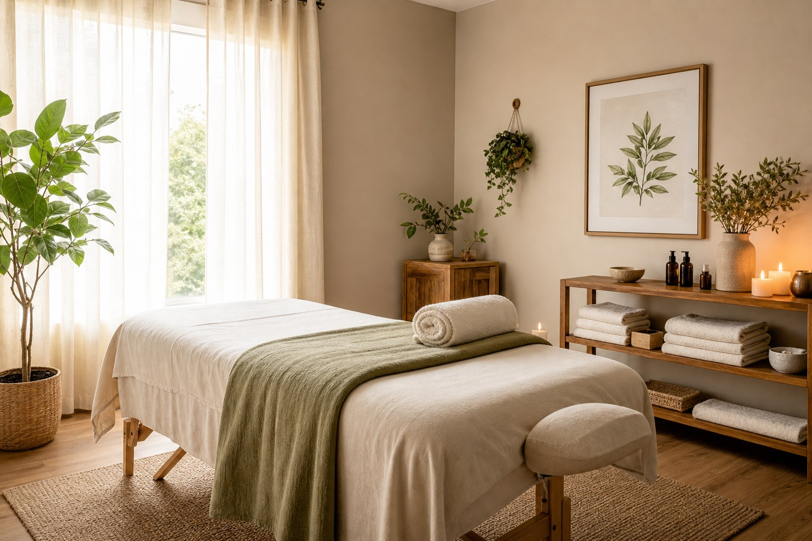
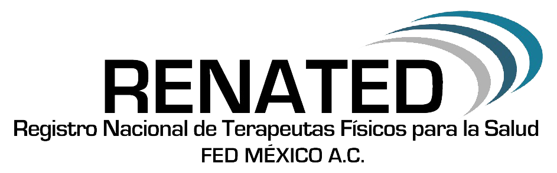
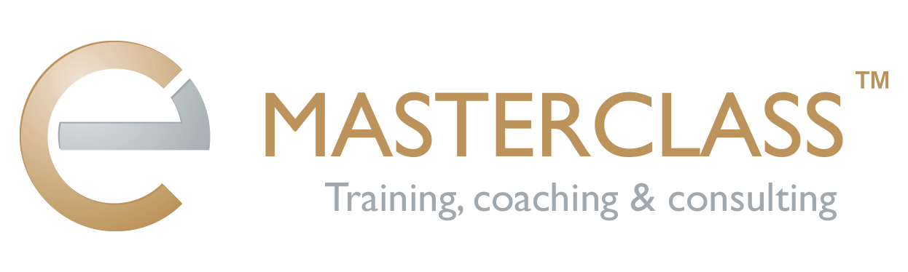
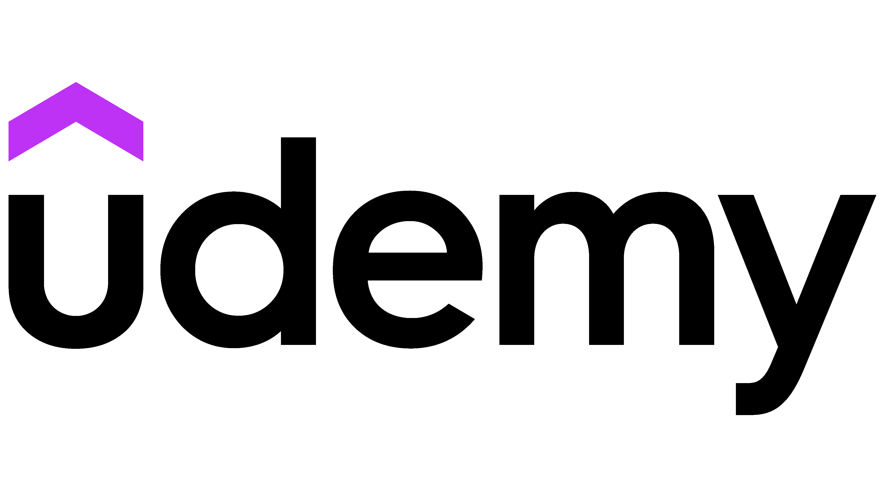
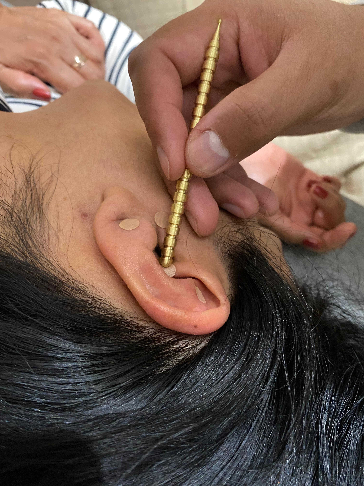
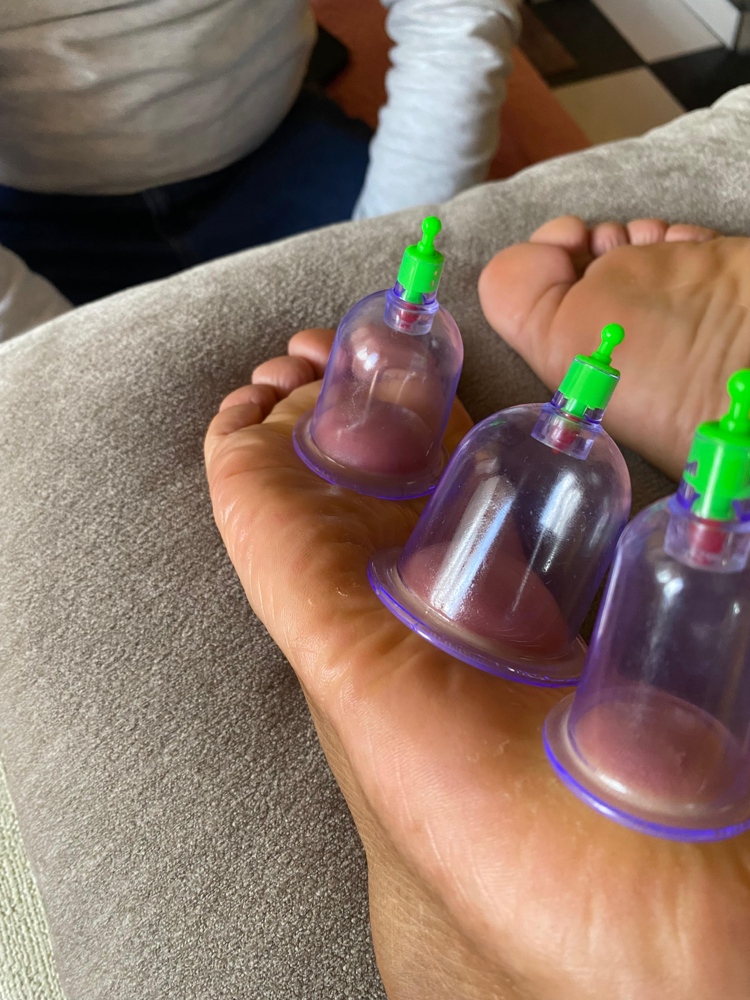
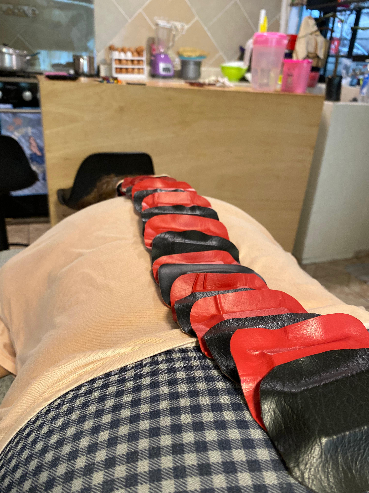
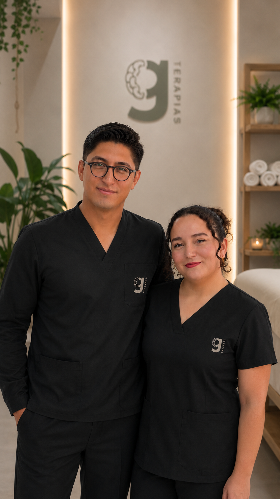

Biomagnetismo
Terapia con imanes que ayuda al organismo a recuperar su balance natural y mejorar el bienestar general.

Terapias complementarias con atención discreta, clara y personalizada para cuidar cuerpo, mente y energía.



Biomagnetismo, osteopatía, alphabiotismo y auriculoterapia en un proceso claro, discreto y personalizado.



La atención se organiza para que sepas qué sigue, con opciones flexibles en consultorio o a domicilio.
Elige el servicio, comparte tus dudas y definimos el horario por WhatsApp.
Nos adaptamos a tu espacio para que la sesión sea cómoda, privada y segura.
Trabajamos con enfoque integral, atención humana y explicación clara.
Te orientamos después de la sesión para mantener fluidez, confianza y continuidad.
ContactarUn espacio para mostrar testimonios, reseñas y recomendaciones compartidas en redes sociales.
Me gustó que todo fuera discreto y ordenado. La explicación antes de la sesión me dio mucha confianza.
Desde el primer mensaje sentí confianza. La atención fue tranquila, clara y muy humana; me explicaron cada paso sin prisa y el espacio se sintió privado, limpio y profesional.
El espacio se siente limpio y profesional. La atención transmite calma y cuidado en cada detalle.
En Terapias G creemos que sanar también empieza por sentirte escuchado. Creamos un espacio tranquilo, profesional y discreto para acompañarte con claridad, respeto y presencia.
Cada sesión se adapta a lo que necesitas en ese momento: observamos, orientamos y cuidamos cada detalle para que tu proceso se sienta humano, ordenado y en confianza.

Agenda tu cita por WhatsApp o síguenos en redes para ver recomendaciones, sesiones y novedades de Terapias G.